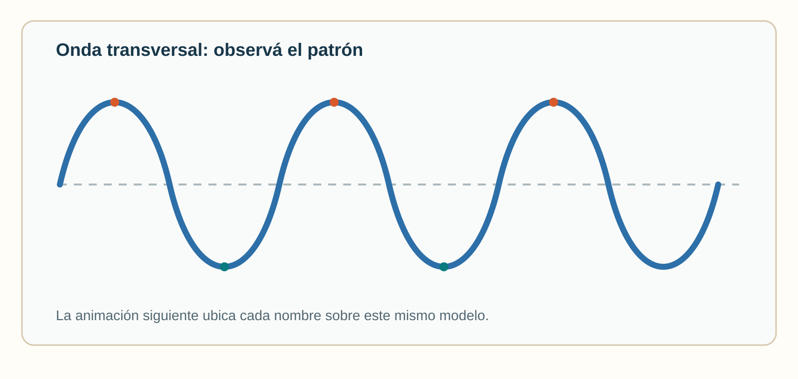

Sistemas Multi Física · Profesor Javier Pereyra
Propagación de ondas mecánicas
De la soga y el sonido a los fenómenos que preparan el estudio de Maxwell.
1 Idea inicial
Una onda mecánica es una perturbación que se propaga en un medio material: soga, agua, aire, resorte o suelo. Transporta energía e información, pero no traslada todo el medio de un lugar a otro.
Animación 1 · propagación
La oscilación es perpendicular al avance. Ejemplo: soga tensa.
La oscilación es paralela al avance. Ejemplo: sonido en el aire.
2 Magnitudes y ecuaciones
Amplitud A: máximo alejamiento del equilibrio. Longitud de onda λ: distancia entre dos crestas consecutivas. Período T: tiempo de una oscilación. Frecuencia f: oscilaciones por segundo. Velocidad v: rapidez de propagación.

Animación 2 · referencias del esquema
| Magnitud | Unidad SI | Interpretación |
|---|---|---|
| A | m | Máximo desplazamiento. |
| λ | m | Repetición espacial. |
| T | s | Una oscilación completa. |
| f | Hz | Oscilaciones por segundo. |
| v | m/s | Avance del patrón. |
3 Problemas resueltos
4 Sonido: compresiones y rarefacciones
La membrana de un parlante vibra: comprime el aire al avanzar y lo rareface al retroceder. El sonido necesita medio material; será una diferencia fundamental con las ondas electromagnéticas.
Animación 3 · sonido longitudinal
5 Reflexión: la onda rebota
La onda encuentra un límite y vuelve por el mismo medio: cambia su dirección. Ejemplos: eco y pulso en el extremo de una soga.
Animación 4 · reflexión
6 Refracción: el sonido cambia de medio (aire → agua)
La curva de la animación es la misma onda de sonido viajando de izquierda a derecha. Contá las crestas que salen de la fuente por segundo: ese ritmo no cambia al cruzar la superficie, así que la frecuencia (el tono que oiríamos) es igual antes y después. Lo que cambia es la rapidez: en el agua el sonido viaja mucho más rápido que en el aire (≈343 m/s en aire contra ≈1480 m/s en agua, casi 4,3 veces más). Como v = λ·f y f no cambia, una v mayor significa una λ mayor: por eso, del lado del agua, las crestas quedan más separadas.
Animación 5 · refracción
7 Difracción: la abertura se comporta como nueva fuente
La onda no cambia de medio: sigue en el mismo aire o la misma agua de siempre. Los frentes llegan rectos y en fila hasta la abertura; en el instante en que cada frente la atraviesa, ese punto empieza a vibrar y genera un frente circular propio, que se expande hacia todos lados como si la abertura fuera una fuente nueva. Por eso escuchamos una voz detrás de una puerta entreabierta, aunque no la veamos.
Animación 6 · difracción
8 Interferencia: qué pasa cuando dos pulsos colisionan
Esta situación se estudia aparte de reflexión, refracción y difracción: no hay límite ni cambio de medio, sino dos pulsos que viajan en sentidos opuestos y en algún momento colisionan, ocupando el mismo lugar al mismo instante. Justo en esa colisión, el desplazamiento del medio es la suma de lo que produciría cada pulso por separado; antes y después de chocar, cada uno sigue viajando solo, como si el otro no existiera. Hay dos casos, según el signo de esa suma.
9 Interferencia constructiva: cresta con cresta
Si los dos pulsos desplazan el medio hacia el mismo lado, sus elongaciones se suman. En el instante exacto de la colisión, cuando los dos pulsos coinciden por completo, la amplitud resultante llega a su máximo: el doble de la de cada pulso. Antes y después de ese instante, cada pulso sigue su camino con su forma original: no queda una onda nueva ni permanente.
Animación 7 · interferencia constructiva
10 Interferencia destructiva: cresta con valle
Si un pulso desplaza el medio hacia arriba y el otro hacia abajo, sus elongaciones tienen signos opuestos y se restan. En el instante exacto de la colisión, cuando los dos pulsos coinciden por completo con igual amplitud, se cancelan totalmente y el medio queda momentáneamente en su posición de equilibrio. Igual que en el caso anterior, el efecto es momentáneo: después de la colisión cada pulso continúa con su forma y su lado originales.
Animación 8 · interferencia destructiva
11 Actividades
- Explicá por qué una onda transporta energía sin trasladar todo el medio.
- Clasificá como mecánica o electromagnética: sonido, luz, onda en agua y onda sísmica.
- Una fuente hace 24 oscilaciones en 6,0 s. Calculá f y T.
- Para T = 0,40 s, hallá f.
- Para λ = 0,80 m y f = 5,0 Hz, hallá v.
- Un sonido de 440 Hz viaja a 343 m/s. Hallá λ.
- Compará las longitudes de onda de sonidos de 250 Hz y 500 Hz en el mismo aire.
- Dibujá una reflexión en el extremo de una soga.
- Explicá la refracción de olas al llegar a agua poco profunda.
- Explicá la difracción de una voz detrás de una puerta.
- Dos pulsos de igual amplitud se acercan: uno hacia arriba y otro hacia abajo. Describí qué ocurre en el instante en que sus centros coinciden y qué ocurre unos segundos después.